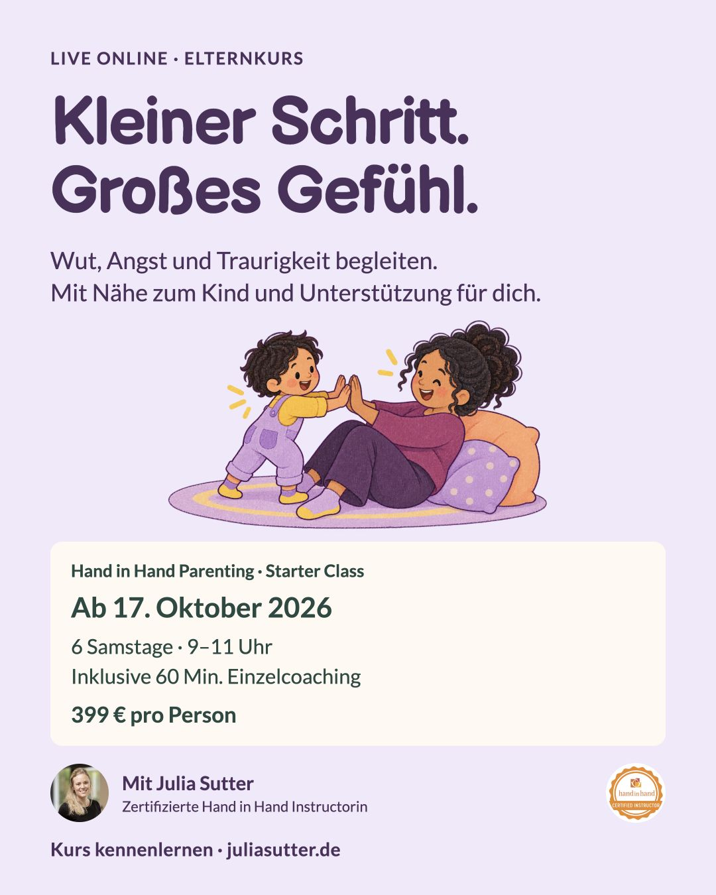
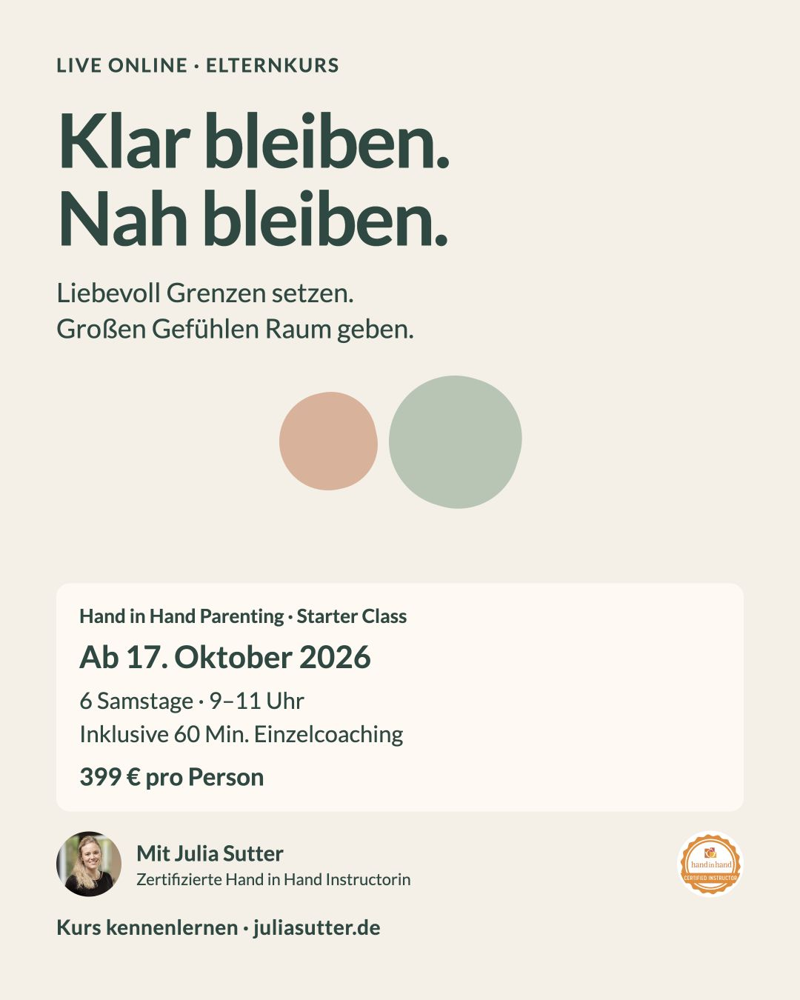
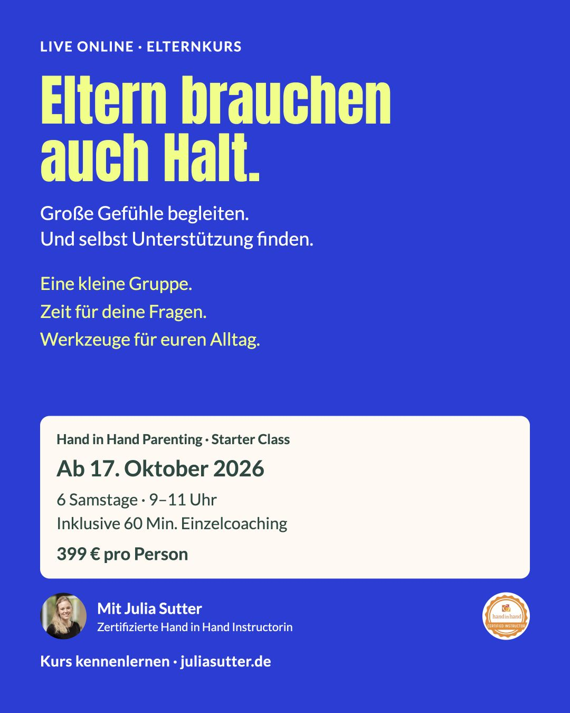

Zwei Entwürfe in Meta angelegt · Kampagne ausgeschaltetGroße Gefühle. Klare Grenzen. Halt für Eltern.
Start mit zwei Motiven; das dritte bleibt als Alternative. Alle Texte und Bilder sind für diesen Test vorbereitet, nicht als Leistungsversprechen validiert.
In Meta eingestellt: Deutschland · deutsche Sprache · Facebook & Instagram Feed/Stories · eine Anzeigengruppe · 150 € Laufzeitbudget · Ende am 17.10.2026 um 9 Uhr. Steuerliche Mehrkosten sind vor Aktivierung zu klären.
Noch offen: Zahlungsmittel-Verifizierung, Instagram-Zuordnung und vollständige Platzierungsvorschauen. Die Website-Messung ist lokal geprüft und gespeichert; Veröffentlichung und Live-Test in Meta stehen aus. Die Zwei-Faktor-Anmeldung muss mit Julia geprüft werden.
1. Große Gefühle begleiten

Feed · JPGStory · JPG
Anzeigentext & Link
Manchmal fühlt sich eine Kleinigkeit riesengroß an. In der Hand in Hand Parenting Starter Class übst du, Wut, Angst und Traurigkeit zu begleiten – mit Nähe zum Kind und Unterstützung für dich.
6 Wochen live online, eine kleine Gruppe und konkrete Werkzeuge für euren Alltag. Mit 60 Minuten Einzelcoaching und WhatsApp-Begleitung durch Julia Sutter, zertifizierte Hand in Hand Parenting Instructorin.
Start am 17. Oktober · samstags 9–11 Uhr · 399 € pro Person. Alle Termine und die Anmeldung findest du auf der Website. Noch unsicher? Dort kannst du auch ein kostenfreies 20-Minuten-Gespräch buchen.
Online-Elternkurs ab 17. Oktober
6 Wochen · kleine Gruppe · persönliche Begleitung
Zielseite ansehen2. Grenzen und Verbindung

Feed · JPGStory · JPG
Anzeigentext & Link
Eine Grenze darf klar sein. Und die Verbindung darf bleiben.
Wie das im Familienalltag aussehen kann, übst du in der Hand in Hand Parenting Starter Class. Du lernst fünf Werkzeuge kennen, probierst sie zu Hause aus und besprichst deine Erfahrungen in einer kleinen Gruppe. Besonders passend für Eltern von Kindern zwischen etwa 2 und 10 Jahren.
6 Samstage ab 17. Oktober, 9–11 Uhr, live online. Inklusive 60 Minuten Einzelcoaching und WhatsApp-Begleitung. 399 € pro Person. Kurs kennenlernen und anmelden – oder zuerst ein kostenfreies 20-Minuten-Gespräch vereinbaren.
Liebevoll Grenzen setzen
Hand in Hand Parenting · Start am 17. Oktober
Zielseite ansehen3. Unterstützung für Eltern

Feed · JPGStory · JPG
Anzeigentext & Link
Auch Eltern brauchen jemanden, der zuhört.
Die Hand in Hand Parenting Starter Class verbindet konkrete Werkzeuge für schwierige Familienmomente mit Unterstützung für dich: Austausch in einer kleinen Gruppe, eine Listening-Partnerschaft, 60 Minuten Einzelcoaching und persönliche WhatsApp-Begleitung.
6 Wochen live online mit Julia Sutter. Start: 17. Oktober · samstags 9–11 Uhr · 399 € pro Person. Auf der Website findest du alle Kursinfos, weitere Termine und ein kostenfreies 20-Minuten-Gespräch zum Kennenlernen.
Unterstützung für euren Familienalltag
Online-Elternkurs · 6 Wochen mit Begleitung
Zielseite ansehenTracking und Erfolgskriterien
Primär: eine vom Formularanbieter bestätigte verbindliche Anmeldung. Kontaktanfragen separat zählen. Das Öffnen des Google-Kalenders ist noch keine Terminbuchung. Meta-Tracking erst nach Einwilligung; keine Formularinhalte oder Angaben zu Kindern an Meta übertragen.
30 € pro Buchung bleibt ein Ziel, keine Prognose. Bei 150 € Kosten entsprechen 1 / 3 / 4 Buchungen einem CAC von 150 / 50 / 37,50 €. Erstattungen und Zahlungseingänge werden getrennt geprüft.
Gespeicherte Einstellungen und offene Schritte